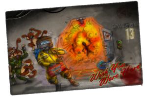

Terrastation 13
|  |
Terraform Gaming Space Station 13
Forum: |
|
Credits: Coders: The original programmers + baystation12 + Addictgamer, Tauka Usanake, Lord Zakida Spriters: The original sprites + baystation12 + Addictgamer, Tauka Usanake, Lord Zakida Sounds: The original sound artists + baystation12 + Addictgamer + Lord Zakida Thanks to: Everybody who's contributed to the history of this codebase (a lot of people and groups) |
Changelog
15 August 2015, Bay12 Merge-update:
/tg/ station 13 Development Team
- Updated code to latest bay12 version
- Grabbed all the latest features and fixes from bay12
- Merged with bay12
- It's the best of both worlds!
- Note we're still working on porting over all our awesome custom modifications.
|
Coders: TLE, NEO, Errorage, muskets, veryinky, Skie, Noise, Numbers, Agouri, Noka, Urist McDorf, Uhangi, Darem, Mport, rastaf0, Doohl, Superxpdude, Rockdtben, ConstantA, Petethegoat, Kor, Polymorph, Carn, Nodrak, Donkie Spriters: Agouri, Cheridan, Cruazy Guest, Deeaych, Deuryn, Matty406, Microwave, ShiftyEyesShady, Skie, Uhangi, Veyveyr, Petethegoat, Kor, Ricotez, Ausops, TankNut Sounds: Skie, Lasty/Vinyl Thanks to: CDK Station devs, GoonStation devs, the original SpaceStation developers and Invisty for the title image |
|
Coders: DopeGhoti, Sunfall, ThVortex Artwork: Captain Hammer Spriters: ((TODO.)) Sounds: Peter J, due, Erik Satie Thanks to: All the dev teams that came before: BS12, /tg/station13, the Goons, and the original SS13 folks. |
Coders: Stuntwaffle, Showtime, Pantaloons, Nannek, Keelin, Exadv1, hobnob, Justicefries, 0staf, sniperchance, AngriestIBM, BrianOBlivion
Spriters: Supernorn, Haruhi, Stuntwaffle, Pantaloons, Rho, SynthOrange, I Said No
Spriters: Supernorn, Haruhi, Stuntwaffle, Pantaloons, Rho, SynthOrange, I Said No

Except where otherwise noted, Goon Station 13 is licensed under a Creative Commons Attribution-Noncommercial-Share Alike 3.0 License.
Rights are currently extended to SomethingAwful Goons only.
Some icons by Yusuke Kamiyamane. All rights reserved. Licensed under a Creative Commons Attribution 3.0 License.